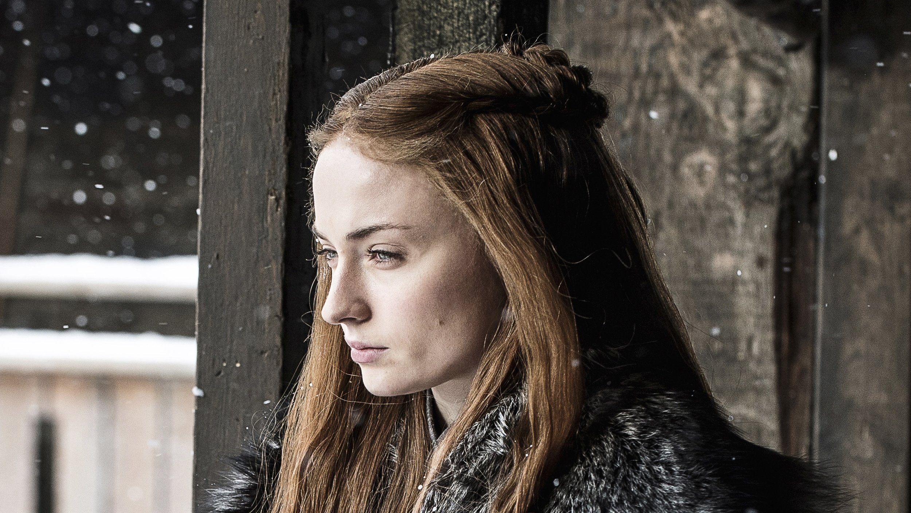
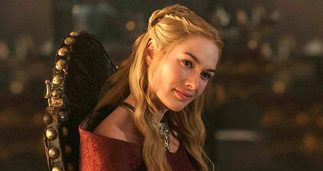
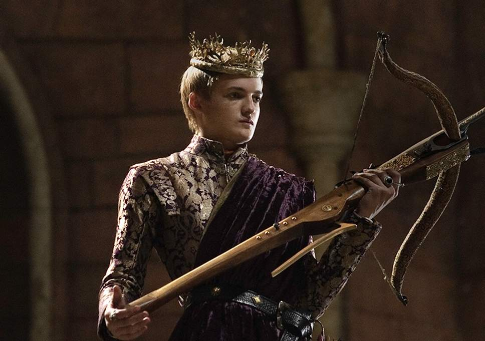
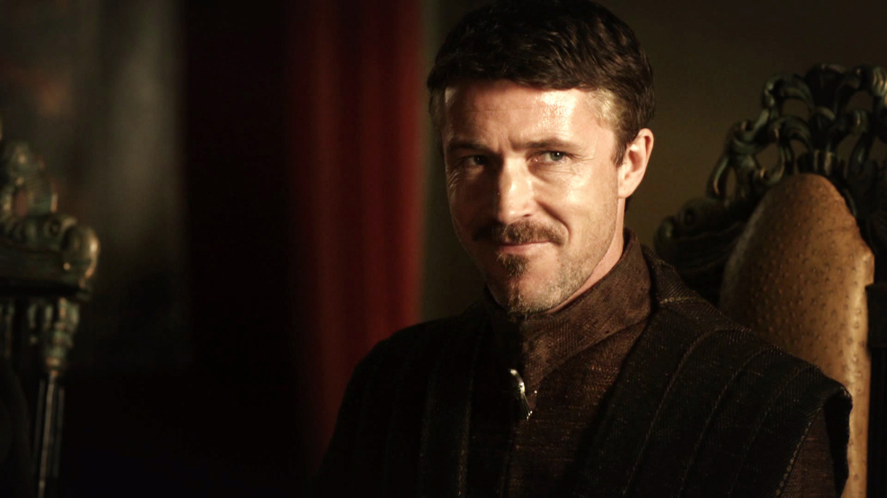

Lord Eddard "Ned" Stark
Est le seigneur de Winterfell au début de la série. Marié à Catelyn Tully, il est le père de Robb, Sansa, Bran, Arya, Rickon, ainsi que de son bâtard Jon Snow. C’était un homme d'honneur très respecté et proche du roi Robert Baratheon, son ami d'enfance. Ned l'accompagne durant la première saison à la capitale pour endosser son rôle de main du roi. Après la mort de Robert (You Win or You Die, 1.07), Ned meurt décapité sur ordre de Joffrey, dans l'épisode Baelor (1.09).
Sansa Stark
Est le deuxième enfant de , ses membres et leurs entouragesla famille. Elle possède un certain talent pour bien se comporter en société et pour survivre au jeu des trônes. Elle accompagne son père à la capitale où elle est promise au prince Joffrey Baratheon. Après la supposée trahison de son père qui lui a valu d'être décapité, elle devient le souffre-douleur du prince qui la maltraite. Elle épouse Tyrion Lannister lors d’un mariage forcé. Elle est proche de sa servante nommée Shae, sa seule amie dans la capitale. Elle trouve également en Petyr Baelish un allié, qui l'aidera à s'enfuir de la capitale après la mort du roi Joffrey. Elle est actuellement la Stark la plus âgée encore en vie et bien qu'elle réside en secret aux Eyrié dans le Val avec Lord Baelish, elle reste ainsi la "clé du Nord", l'héritière légitime de Winterfell, Bran et Rickon étant supposés morts. Sa louve, Lady, a été tuée par le Limier, sous l’ordre de Robert Baratheon dans la saison 1.
Cersei Barathéon
Née Lannister, Reine mère du royaume et fille de lord Tywin, est des trois enfants de ce dernier celle qui ressemble le plus à son père. Calculatrice, froide et intelligente, Cersei agit en permanence pour renforcer le pouvoir de sa famille et saper celui des autres. Tout comme son père, elle déteste son frère Tyrion qu’elle considère comme responsable de la mort de sa mère. Pourtant, étant une femme, Tywin ne lui a jamais montré plus qu’un froid dédain au fil des ans. Mariée à Robert Ier Barathéon, qui ne l’aimera jamais, elle lui donnera officiellement trois enfants, cependant il devient très vite évident que ceux-ci ne sont pas nés de Robert mais de Jaime, des fruits d’une relation incestueuse.
Joffrey Ier Barathéon
Est le fils aîné de Cersei , ses membres et leurs entourageset Robert et hérite donc du trône à la mort de ce dernier. Joffrey a toujours été un enfant colérique, sadique et violent. Devenu roi, ces traits de caractères deviennent encore plus marqués et menacent de mettre en péril son règne. Ainsi, c’est lui qui ordonne l'exécution de Ned Stark contre l’avis de tout ses conseillers, déclenchant la rébellion du Nord. Fiancé d’abord à Sansa, Joffrey prend un malin plaisir à la faire souffrir, en lui rappelant en permanence sa condition de prisonnière, et de fille et soeur de traîtres. Une fois les Tyrells alliés aux Lannisters, Joffrey se fiance avec Margaery Tyrell. Joffrey trouvera la mort durant ses propres noces, tué officiellement par Tyrion et Sansa, mais les vrais assassins, Olenna Tyrell et Petyr Baelish, courent toujours...
Petyr “Littlefinger” Baelish
Petit homme sans nom ni fortune au départ, est un intrigant intelligent et peu scrupuleux qui sait profiter au mieux des situations de chaos pour satisfaire son ambition démesurée. Après avoir oeuvré pendant des années à Port Réal, où il avait été introduit par Jon Arryn, en tant que trésorier de la couronne et tenancier de bordel, il s’est depuis enfui aux Eyrié avec Sansa Stark, où il a épousé Lysa Arryn, qu’il a tuée peu de temps après. Il avait par ailleurs fomenté un peu auparavant l’assassinat du roi Joffrey Baratheon, avec l’aide d’Olenna Tyrell. Il semble éprouver des sentiments ambigus pour sa protégée Sansa Stark, fille de la seule femme qu’il dit avoir jamais aimée : Catelyn Stark. En ce début de saison 5, il est le tuteur légitime de l’héritier des Eyrié : Robin Arryn, ce qui en fait l’un des hommes les plus puissants de Westeros, même si cette position est encore fragile.




